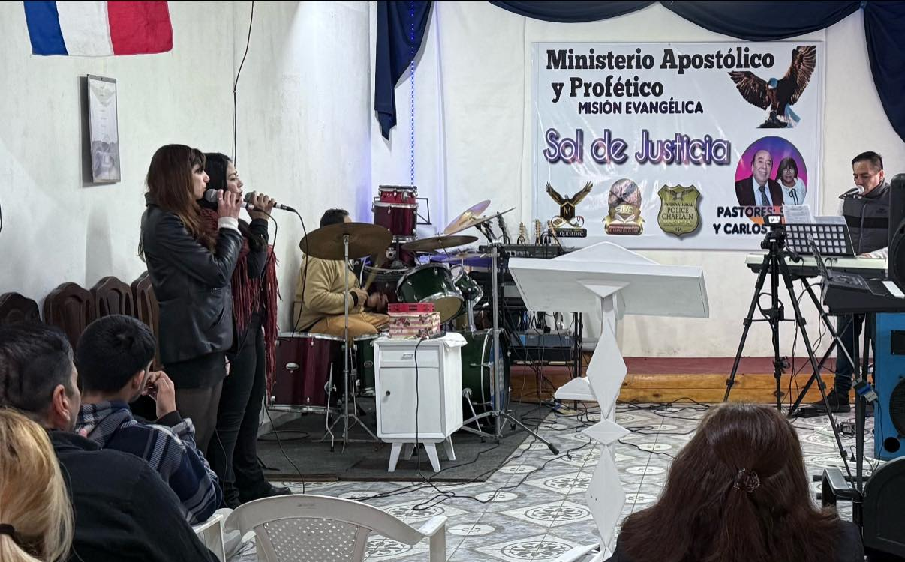
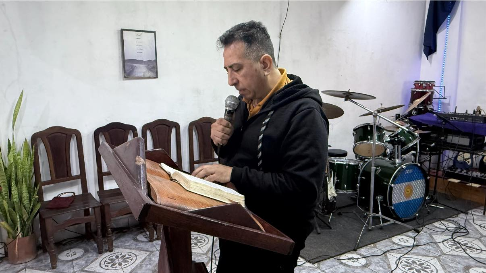
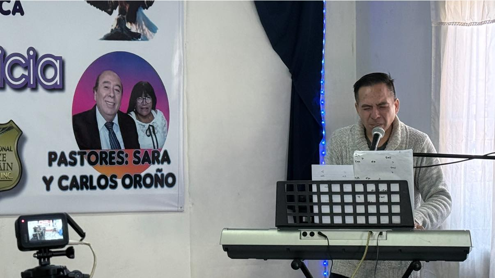
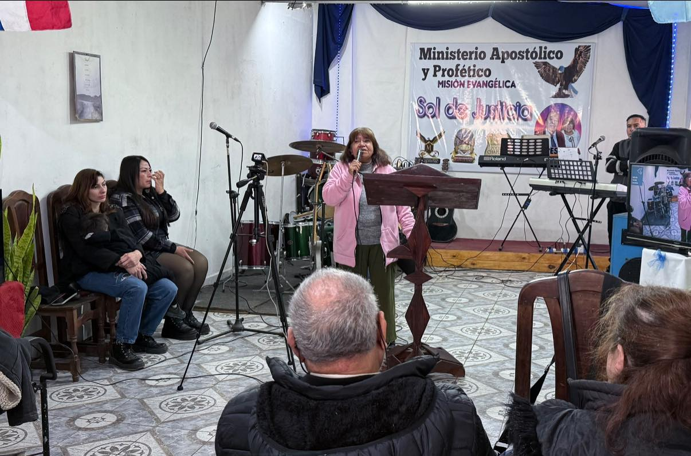
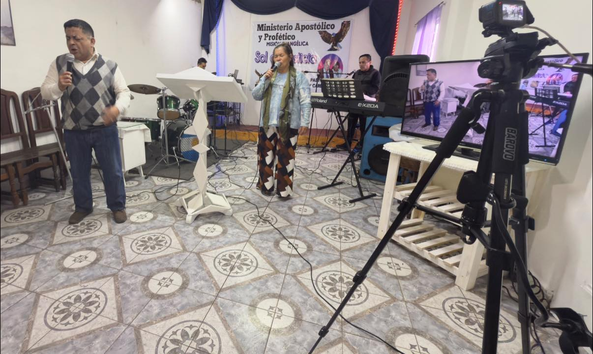
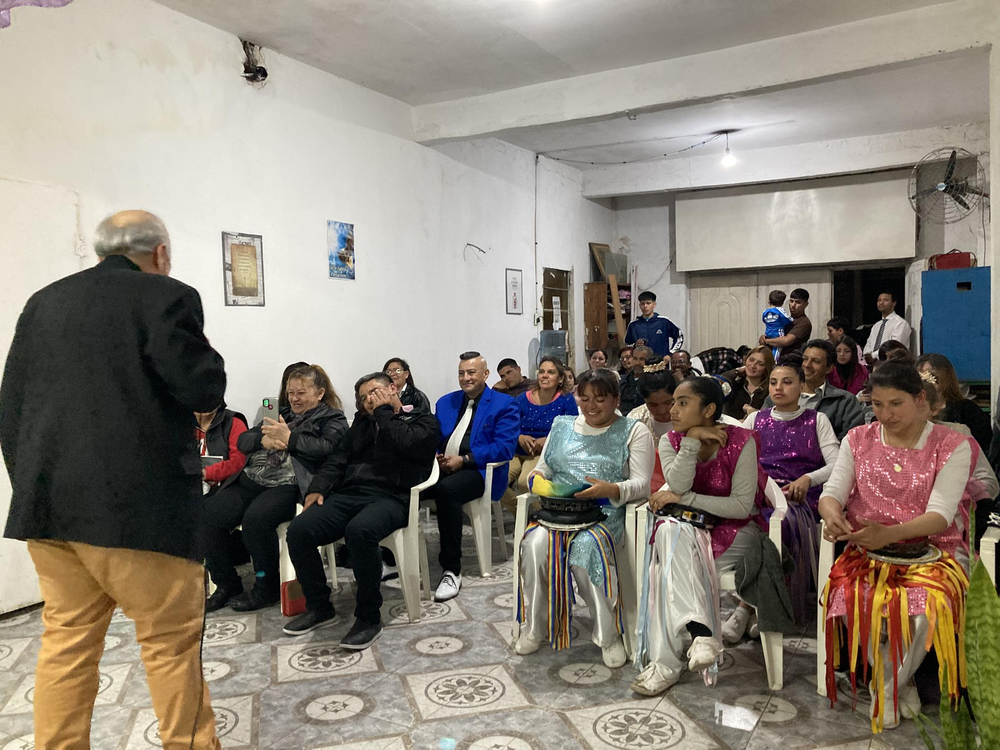

Más de Cuatro Décadas de Fe






Horarios 11:11 AM (Argentina)
México: 08:11 AM
Estados Unidos: 09:11 AM
España: 16:11 PM
Estados Unidos (Miami/NY): 10:11 AM
Colombia: 09:11 AM
¿Tenés un pedido de oración?
Si tenés un pedido de oración,
estaremos intercediendo por vos.
Domingos - 11:00 AM
552 Gobernador Julio Acosta 883, Florencio Varela
Buenos Aires - Argentina
Lunes a Viernes - 21:00 a 22:00 PM